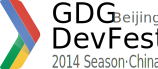
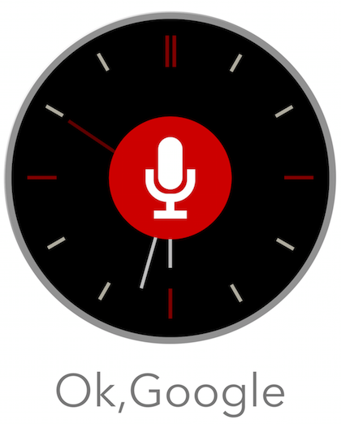
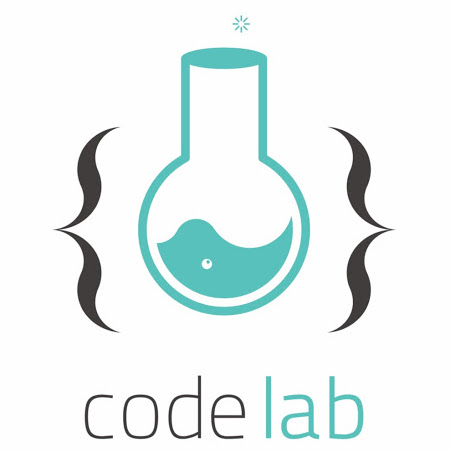

<link rel="import" href="bower_components/polymer/polymer.html">
<link rel="import" href="bower_components/paper-button/paper-button.html">

<polymer-element name="event-home" noscript>
  <template>
    <style>
      #home-container {
        margin-left: 5%;
        margin-right: 5%;
        margin-top: 30px;
        margin-bottom: 30px;
      }
      @media (min-width: 1120px) {
        #home-container {
          margin-left: auto;
          margin-right: auto;
          max-width: 800px;
        }
      }
      #home-banner {
        margin-top: 30px;
        margin-bottom: 30px;
      }
      #devfest_season {
        width: 100%;
      }
      paper-button {
        margin: 1em;
        width: 10em;
        font-size: x-large;
        font-weight: bold;
      }
      paper-button[raisedButton].colored {
        background: #4285f4;
        color: #fff;
      }
      paper-button[raisedButton].colored #ripple,
      paper-button[raisedButton].colored::shadow #ripple {
        color: #2a56c6;
      }
      paper-button[raisedButton].colored #focusBg,
      paper-button[raisedButton].colored::shadow #focusBg {
        background: #3367d6;
      }
      div p {
        margin-top: 5px;
        margin-bottom: 5px;
      }
      section {
        padding-top: 20px;
        padding-bottom: 20px;
        border-top: 1px solid #e7e7e7;
      }
      .home_panel img {
        /*margin-left: 15%;*/
        width: 80%;
        height: 100%;
        /*margin-right: 15%;*/
      }
      .home_panel div {
        width: 50%;
      }
      @media (max-width: 600px) {
        .home_panel div{
          width: 100%;
        }
      }
    </style>
    <div id="home-container">
      <div id="home-banner">
        
      </div>
      <div vertical layout center>
        <p>2014年10月26日，北京 GDG 大型开发者活动 DevFest，全天22场 Session 和 Codelab。</p>
        <p>最纯净的技术内容，由社区志愿者独立组织，一个属于开发者自己的节日。</p>
        <p><b>本次活动照片和所有讲义已经发布，详见<a href="http://www.chinagdg.com/thread-5593-1-1.html">这里</a></b></p>
        <div>
          <a href="http://www.chinagdg.com/thread-5593-1-1.html"><paper-button raisedButton class="colored" label="活动已结束"></paper-button></a>
        </div>
      </div>
      <section>
        <div class="home_panel" layout horizontal wrap center>
          <div>
            <h2>Android 技术分会场</h2>
            <p>Android 技术专场聚焦 Android Wear、Material Design、Android L 等新技术，以及开发工具和开发经验的分享。</p>
          </div>
          <div horizontal center-justified layout></div>
        </div>
      </section>
      <section>
        <div class="home_panel" layout horizontal wrap center>
          <div horizontal center-justified layout></div>
          <div>
            <h2>Web 技术分会场</h2>
            <p>Web 技术专场包括 Polymer 、跨设备响应式 Web 设计、HTML5、构建工具（如 Gulp/Grunt、Bower）、移动 Web 开发、UX/Design 等内容。</p>
          </div>
        </div>
      </section>
      <section>
        <div class="home_panel" layout horizontal wrap center>
          <div>
            <h2>Codelab 分会场</h2>
            <p>本次活动为喜欢动手的同学单独准备了一个半天 Codelab 会议室，边学边用，快速上手体验新技术。包括 Polymer、 Android Wear Codelab 。</p>
            <p>更多活动信息请参考左侧导航栏。</p>
          </div>
          <div horizontal center-justified layout></div>
        </div>
      </section>
      <section>
        
      </section>
    </div>
  </template>
</polymer-element>